Introduction
Linear models are relatively simple and interpretable, but they might not be powerful enough for prediction, because the linearity assumption is often an oversimplification.
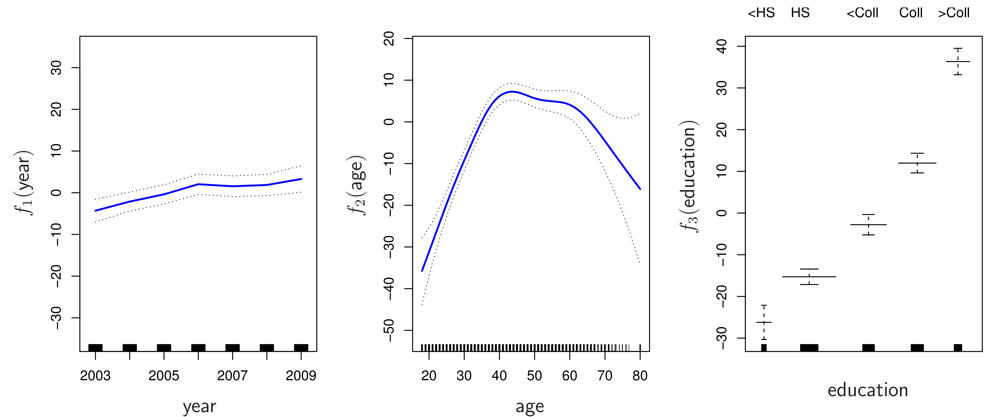
- Linear Regression
- Ridge Regression
- Lasso
- PCR
Introduction (Cont.)
This chapter will focus on relaxing the linearity assumption while trying to maintain interpretability. We will explore several non-linear approaches:
Polynomial Regression: Introduces non-linearity by adding polynomial terms of the predictors.
Step Functions: Divides the range of a variable into distinct regions, fitting a constant within each.
Regression Splines: A more flexible approach, dividing the predictor’s range into regions and fitting polynomials within each, but with constraints for smoothness.
Smoothing Splines: Minimizes a combination of the residual sum of squares and a penalty for function roughness.
Local Regression: Fits a model locally, using only nearby data points.
Generalized Additive Models (GAMs): Extends the above methods to multiple predictors.
Polynomial Regression
Instead of a linear model:
\[ y_i = \beta_0 + \beta_1 x_i + \epsilon_i \]
We use a polynomial function:
\[ y_i = \beta_0 + \beta_1 x_i + \beta_2 x_i^2 + \beta_3 x_i^3 + ... + \beta_d x_i^d + \epsilon_i \]
- This is still a linear model in terms of the coefficients, so we can use least squares!
- The coefficients themselves aren’t usually of direct interest, but we examine the entire fitted function.
- It is unusual to use \(d > 3\) or \(4\) as higher degrees can lead to overly flexible and strange shapes.
Polynomial Regression: Example
We fit a degree-4 polynomial to the Wage data. The solid blue curve shows the polynomial fit, and the dashed curves represent a 95% confidence interval.
The confidence interval is calculated by:
- Computing the fitted value at a specific age: \(\hat{f}(x_0)\).
- Estimating the variance of the fit: \(\text{Var}[\hat{f}(x_0)]\).
- Calculating the pointwise standard error: \(\sqrt{\text{Var}[\hat{f}(x_0)]}\).
- Forming an approximate 95% confidence interval: \(\hat{f}(x_0) \pm 2 \cdot \text{SE}[\hat{f}(x_0)]\).
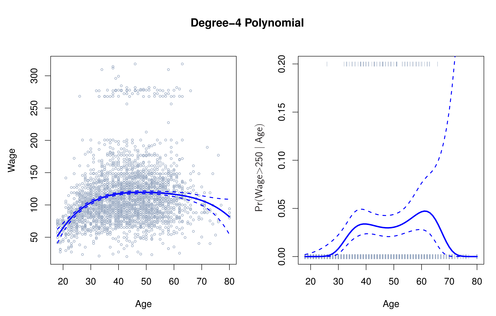
Polynomial Logistic Regression
We can also use polynomial terms within logistic regression to model a binary outcome. Here, we model the probability that wage > 250 given age.
\[ \text{Pr}(y_i > 250 | x_i) = \frac{\exp(\beta_0 + \beta_1 x_i + \beta_2 x_i^2 + ... + \beta_d x_i^d)}{1 + \exp(\beta_0 + \beta_1 x_i + \beta_2 x_i^2 + ... + \beta_d x_i^d)} \]
Note the wide confidence intervals, especially for older ages, due to fewer high earners in the dataset.
Step Functions
Polynomial regression imposes a global structure.
Step functions impose a local structure by:
- Breaking the range of \(X\) into bins (defined by cutpoints \(c_1, c_2, ..., c_K\)).
- Fitting a different constant in each bin.
- Creating \(K+1\) new variables:
where \(I(\cdot)\) is an indicator function.
Step Functions (Cont.)
We then use least squares with \(C_1(X), C_2(X), ..., C_K(X)\) as predictors:
\[y_i = \beta_0 + \beta_1C_1(x_i) + \beta_2C_2(x_i) + \dots + \beta_KC_K(x_i) + \epsilon_i\]
Note that \(C_0(X)\) is excluded to avoid multicollinearity (since \(\sum_{k=0}^{K} C_k(X) = 1\)). \(\beta_0\) is the mean value of \(Y\) for \(X < c_1\).
\(\beta_j\) represents the average increase in the response for \(X\) in the range \(c_j \le X < c_{j+1}\) relative to \(X < c_1\).
We essentially converted a continuous variable into an ordered categorical variable.
Step Functions: Example
Here’s an example of fitting step functions to the Wage data. The left panel shows a piecewise constant fit to wage, and the right panel shows the fitted probabilities from a logistic regression model for wage > 250.
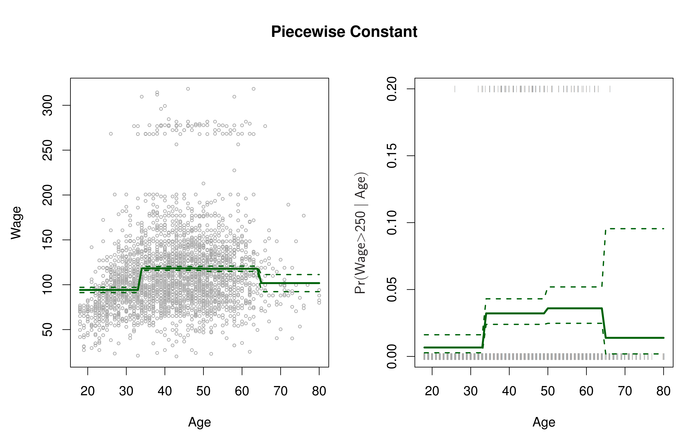
Step functions can miss trends, like the initial increase of wage with age. They are popular in biostatistics and epidemiology (e.g., using 5-year age groups).
Basis Functions
Polynomial and piecewise-constant regression are special cases of a basis function approach.
We have a family of functions/transformations to apply to a variable \(X\): \(b_1(X), b_2(X), ..., b_K(X)\).
Instead of fitting a linear model in \(X\), we fit:
\[y_i = \beta_0 + \beta_1 b_1(x_i) + \beta_2 b_2(x_i) + ... + \beta_K b_K(x_i) + \epsilon_i\]
Basis functions are fixed and known. We choose them.
This is still a linear model! We can use least squares.
All inference tools from linear models (Chapter 3) are still available!
Regression Splines
- Regression splines extend upon polynomial and piecewise-constant regression.
- They provide more flexibility by combining the strengths of these two approaches.
Piecewise Polynomials
Instead of a high-degree polynomial over the entire range of \(X\), we fit separate low-degree polynomials over different regions of \(X\).
Example: Piecewise cubic polynomial:
\[y_i = \beta_0 + \beta_1 x_i + \beta_2 x_i^2 + \beta_3 x_i^3 + \epsilon_i\]
where the coefficients \(\beta_0, \beta_1, \beta_2, \beta_3\) differ in different parts of the range of \(X\).
Knots: Points where the coefficients change.
Piecewise Polynomials (Example)
Piecewise Cubic:
\[y_i = \begin{cases} \beta_{01} + \beta_{11}x_i + \beta_{21}x_i^2 + \beta_{31}x_i^3 + \epsilon_i & \text{if } x_i < c \\ \beta_{02} + \beta_{12}x_i + \beta_{22}x_i^2 + \beta_{32}x_i^3 + \epsilon_i & \text{if } x_i \ge c \end{cases}\]
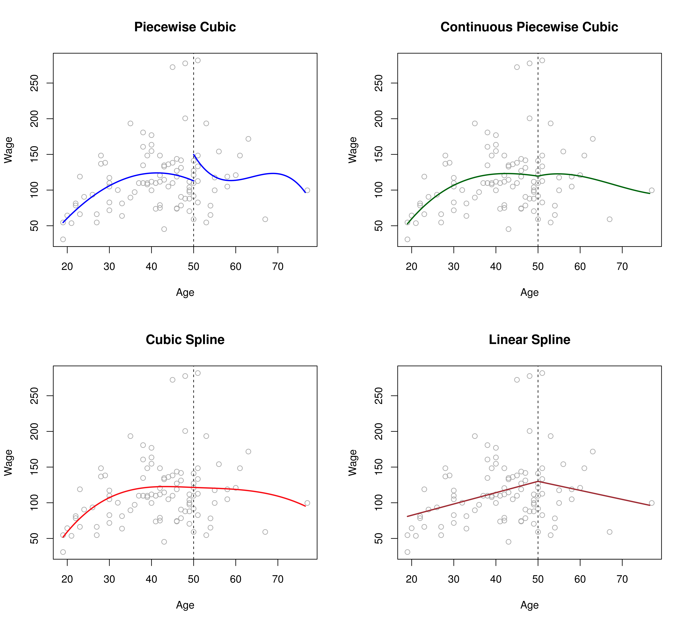
This fit has a problem: It’s discontinuous! It looks ridiculous! We have 8 degrees of freedom (2 sets of 4 parameters)
Constraints and Splines
To make the piecewise cubic more reasonable, we introduce constraints:
- Continuity: Make the function continuous at the knot.
- Continuous 1st Derivative: Make the function smooth (no sharp turns) at the knot.
- Continuous 2nd Derivative: Make the function even smoother.
Constraints and Splines (Cont.)
Each constraint reduces the degrees of freedom.
A cubic spline with K knots uses 4 + K degrees of freedom.
- 4: base cubic polynomial
- K: number of knots
A linear spline is continuous, fitting a line in each region, with continuity at each knot.
The Spline Basis Representation
A cubic spline with K knots can be represented using a basis function model:
\[y_i = \beta_0 + \beta_1 b_1(x_i) + \beta_2 b_2(x_i) + ... + \beta_{K+3} b_{K+3}(x_i) + \epsilon_i\]
A simple basis is: \(x, x^2, x^3\), and then one truncated power basis function per knot:
\[h(x, \xi) = (x - \xi)^3_+ = \begin{cases} (x-\xi)^3 & \text{if } x > \xi \\ 0 & \text{otherwise} \end{cases}\]
where \(\xi\) is the knot.
We can fit this model using least squares.
The Spline Basis Representation (Cont.)
To fit a cubic spline with K knots, use least squares with an intercept and 3 + K predictors: \(X, X^2, X^3, h(X, \xi_1), h(X, \xi_2), ..., h(X, \xi_K)\).
Splines can have high variance at the boundaries.
A natural spline adds boundary constraints: the function is linear outside the boundary knots.
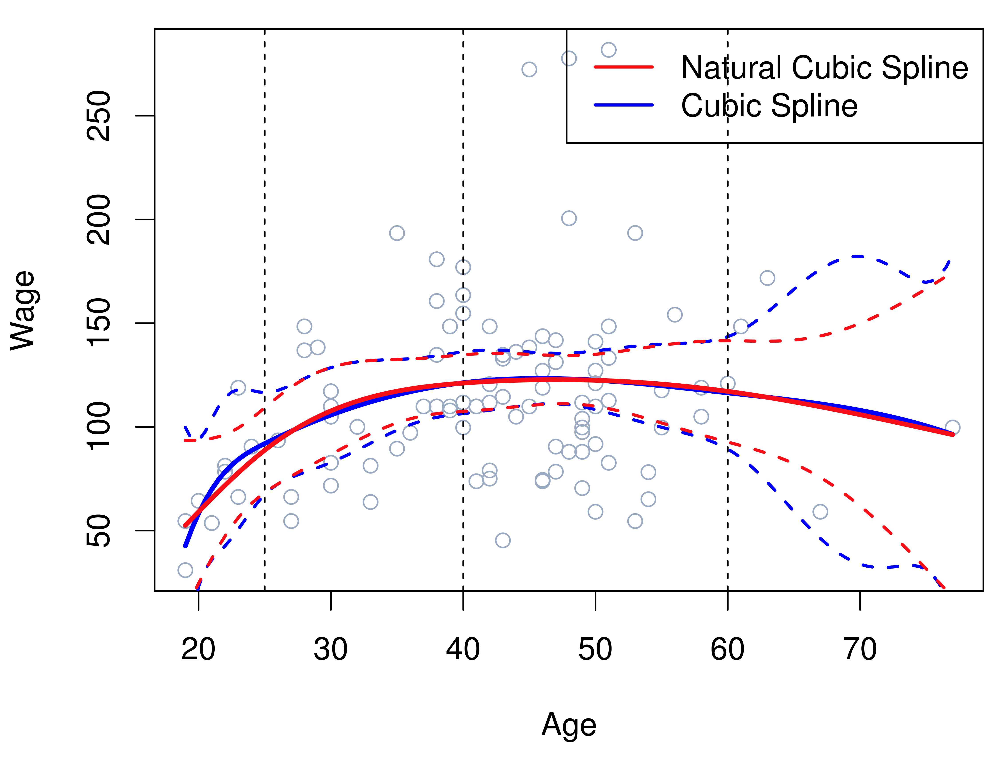
Choosing the Number and Locations of the Knots
Place more knots where the function might vary rapidly, fewer where it’s stable.
Common practice: Place knots uniformly (e.g., at quantiles of the data).
- Specify degrees of freedom.
- Software places knots automatically.
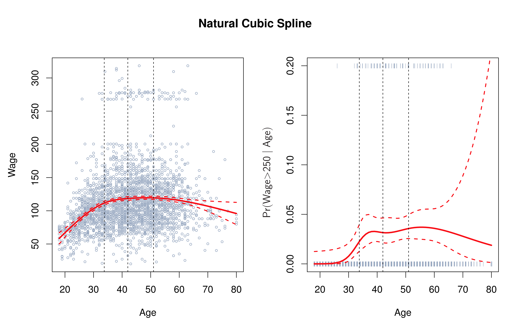
Choosing the Number and Locations of the Knots(Cont.)
How many knots (or degrees of freedom)?
Cross-validation is a more objective approach.
- Fit splines with varying numbers of knots.
- Compute cross-validated RSS.
- Choose the number of knots that minimizes the cross-validated RSS.
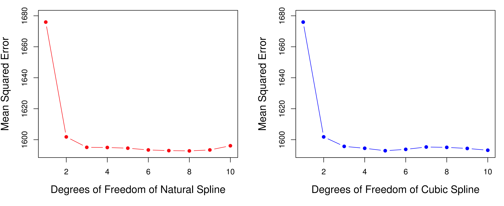
Comparison to Polynomial Regression
- Regression splines often give better results than polynomial regression.
- Splines introduce flexibility by increasing knots, keeping degree fixed.
- Polynomials need high degrees for flexibility.
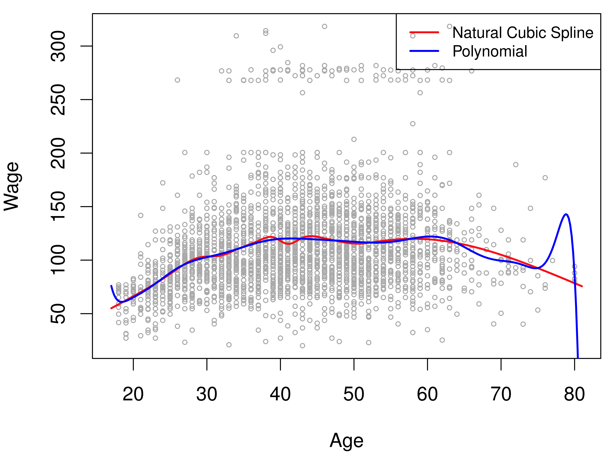
High-degree polynomials can show wild behavior, especially near boundaries.
Smoothing Splines
- An alternative approach that also produces a spline.
An Overview of Smoothing Splines
We want to find a function \(g(x)\) that fits the data well (small RSS) and is smooth.
We minimize:
\[\sum_{i=1}^{n}(y_i - g(x_i))^2 + \lambda \int g''(t)^2 dt\]
- Loss + Penalty
- \(\lambda\): Non-negative tuning parameter.
- \(\int g''(t)^2 dt\): Measures the roughness of the function. (Integral of the squared second derivative).
Smoothing Splines (Cont.)
- \(\lambda \int g''(t)^2 dt\) encourages \(g\) to be smooth.
- Larger \(\lambda\) \(\Rightarrow\) smoother \(g\).
- \(\lambda = 0\): \(g\) interpolates the data (overfits).
- \(\lambda \to \infty\): \(g\) becomes a linear least squares line.
- \(\lambda\) controls the bias-variance trade-off.
- The function \(g(x)\) that minimizes the above equation is a natural cubic spline with knots at every unique value of \(x_i\).
Choosing the Smoothing Parameter \(\lambda\)
A smoothing spline has knots at every data point.
But, the tuning parameter \(\lambda\) controls the effective degrees of freedom.
As \(\lambda\) increases from 0 to \(\infty\), the effective degrees of freedom (\(df_{\lambda}\)) decrease from \(n\) to 2.
LOOCV (Leave-One-Out Cross-Validation) can be used efficiently:
\[\text{RSS}_{cv}(\lambda) = \sum_{i=1}^{n} \left( \frac{y_i - \hat{g}_{\lambda}^{(-i)}(x_i)}{1 - \{\mathbf{S}_{\lambda}\}_{ii}} \right)^2\]
\(\hat{g}_{\lambda}^{(-i)}(x_i)\): Fit with observation \(i\) left out.
\(\mathbf{S}_{\lambda}\): A matrix depending on \(\lambda\).
LOOCV lets us choose \(\lambda\) efficiently.
Smoothing Splines: Example
Smoothing spline fits to the Wage data. Red curve: 16 effective degrees of freedom. Blue curve: \(\lambda\) chosen by LOOCV, resulting in 6.8 effective degrees of freedom.
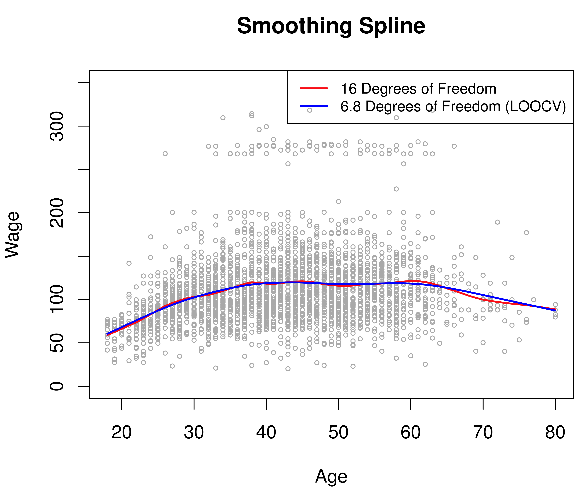
Simpler models are preferred, unless there is strong evidence for a more complex model.
Local Regression
- Fits a model locally, using only nearby training observations.
- Algorithm:
- Gather the fraction s = k/n of training points closest to \(x_0\).
- Assign a weight \(K_{i0} = K(x_i, x_0)\) to each point in this neighborhood.
- Points farthest from \(x_0\) get weight zero.
- Closest points get the highest weight.
- Fit a weighted least squares regression: \[\text{minimize } \sum_{i=1}^{n} K_{i0} (y_i - \beta_0 - \beta_1 x_i)^2\]
- The fitted value at \(x_0\) is: \(\hat{f}(x_0) = \hat{\beta}_0 + \hat{\beta}_1 x_0\).
Local Regression (Cont.)
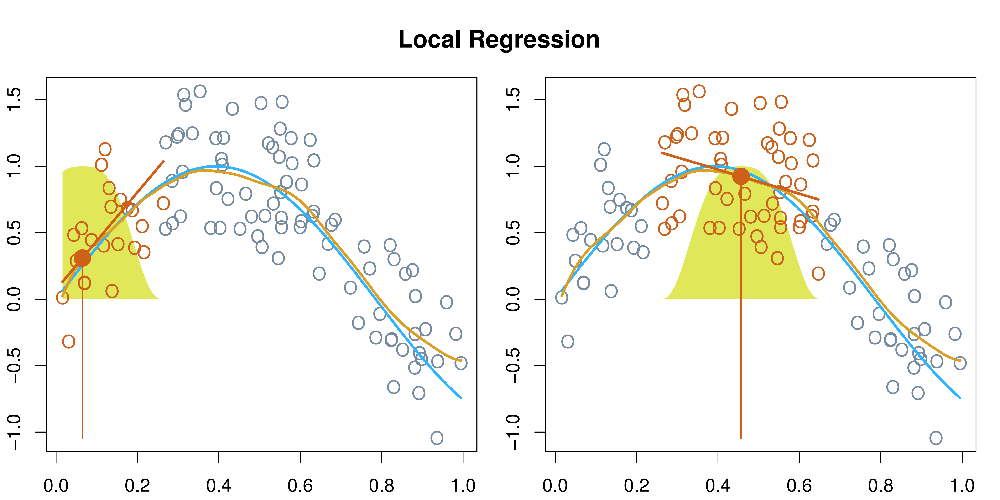
- Key Choice: The span, s.
- Smaller s: More local and wiggly fit.
- Larger s: Smoother, more global fit.
- We can use cross-validation to choose s.
- Local regression can be generalized.
- Varying coefficient model.
- Multi-dimension.
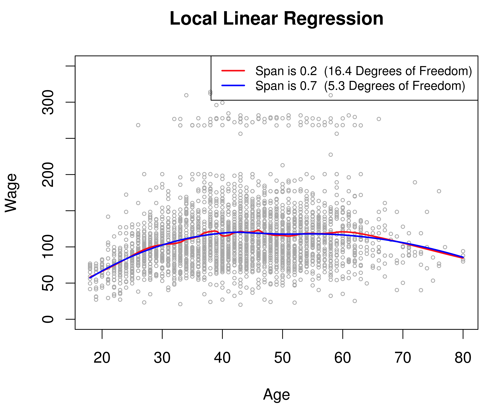
Generalized Additive Models (GAMs)
- Extends multiple linear regression to allow non-linear functions of predictors, while maintaining additivity.
\[y_i = \beta_0 + f_1(x_{i1}) + f_2(x_{i2}) + ... + f_p(x_{ip}) + \epsilon_i\]
GAMs allow non-linear functions \(f_j\) for each \(X_j\).
We can use various building blocks: splines, local regression, polynomial regression, step functions.
We can fit GAM by “backfitting”
GAMs: Example
For the
Wagedata:wage = β0 + f1(year) + f2(age) + f3(education) + εyear,age: quantitative.education: qualitative (5 levels).
Fit using natural splines (for
year,age) and dummy variables (foreducation).The entire model is a large regression on spline basis variables and dummy variables.
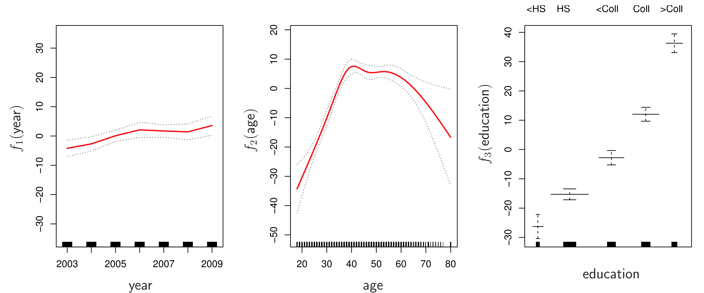
GAMs: Example (Smoothing Splines)
- We can also fit using smoothing splines.
- In most cases, results are similar between natural and smoothing splines.
GAMs for Classification Problems
Can be used when Y is qualitative (e.g., binary).
Logistic regression GAM:
\[\log\left( \frac{p(X)}{1 - p(X)} \right) = \beta_0 + f_1(X_1) + f_2(X_2) + ... + f_p(X_p)\]
Example: Predict
wage> 250 using a GAM.
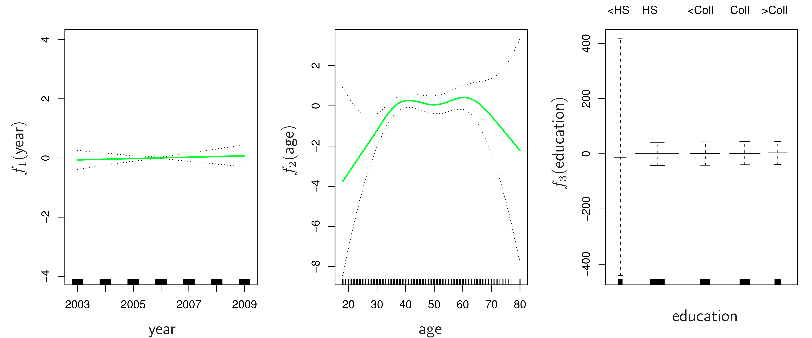
Pros and Cons of GAMs
- Pros:
- Automatic modeling of non-linear relationships.
- Potentially more accurate predictions.
- Additivity helps interpret individual effects.
- Smoothness can be summarized via degrees of freedom.
- Cons:
- Restricted to be additive (can miss interactions).
- Interactions can be manually added.
Summary
- This chapter explored techniques for moving beyond linearity in regression models.
- We saw how to incorporate non-linear relationships using:
- Polynomial regression
- Step functions
- Regression splines
- Smoothing splines
- Local regression
- Generalized Additive Models (GAMs)
- These methods allow for more flexibility while maintaining interpretability.
- Cross-validation is crucial for choosing tuning parameters.
- GAMs extend these ideas to multiple predictors.
Thoughts and Discussion
When would you choose a linear model over a non-linear model, and vice-versa?
How do the different non-linear techniques compare in terms of flexibility and interpretability?
Can you think of situations where a GAM might not be sufficient, and a more complex model (e.g., tree-based methods) would be needed?
How can you incorporate interactions into GAMs?
Discuss the trade-off between using smoothing splines and regression splines. When might one be preferred over the other?